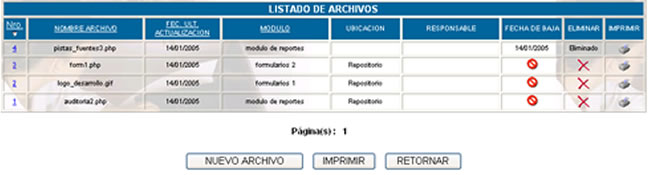
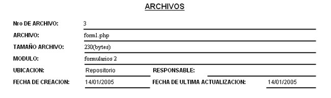
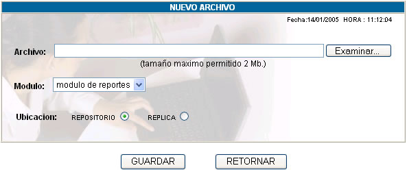
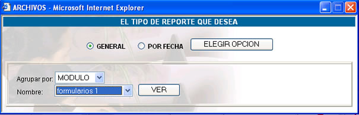
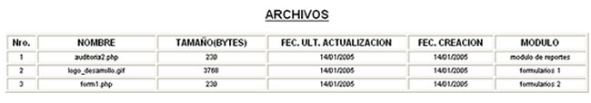

ARCHIVOS
Al hacer click sobre esta opción usted podrá
ver la lista de archivos existentes:

Nro.; número
correlativo que nos indica el número de archivo.
Nombre Archivo; nos indica el nombre del archivo.
Fec. Ult. Actualización; indica la fecha de última
actualización.
Módulo; indica a que módulo
pertenece el archivo.
Ubicación; indica la ubicación
del archivo, que puede tomar los siguientes valores: Repositorio, Copia de
Trabajo, Réplica y Revisión.
Responsable; indica el nombre del usuario
responsable del archivo en ese momento.
Fecha de Baja; indica la fecha de eliminación
del archivo.
Eliminar; haciendo click en esta opción,
usted podrá eliminar un archivo
Imprimir; haciendo click en esta opción,
usted podrá obtener un reporte de los datos del archivo.

Nuevo Archivo; haciendo click en este botón,
se podrá crear un archivo con la siguiente pantalla:

Archivo; registra
el nombre del archivo. Presionando el botón EXAMINAR, se puede
copiar el archivo local al servidor.
Módulo; registra el módulo al cual pertenecerá
el archivo.
Ubicación; con esta opción puede elegirse
Imprimir; haciendo click en este botón,
usted podrá obtener un reporte de los datos de todos los archivos, según
el tipo de reporte que desea, que podrá ser GENERAL Y POR
FECHA:

El resultado del reporte será la siguiente pantalla:
